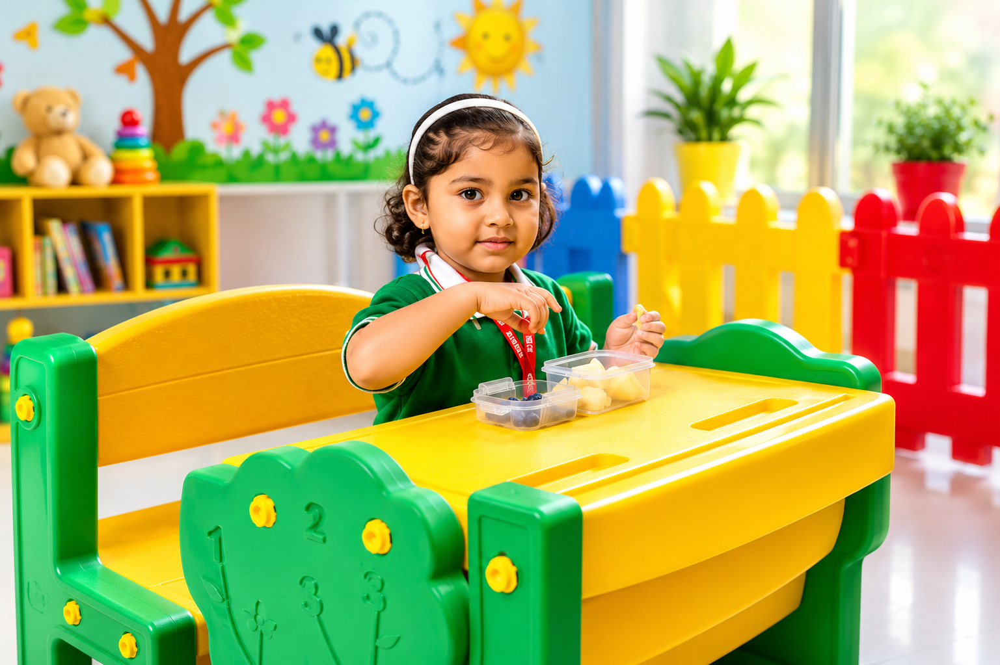
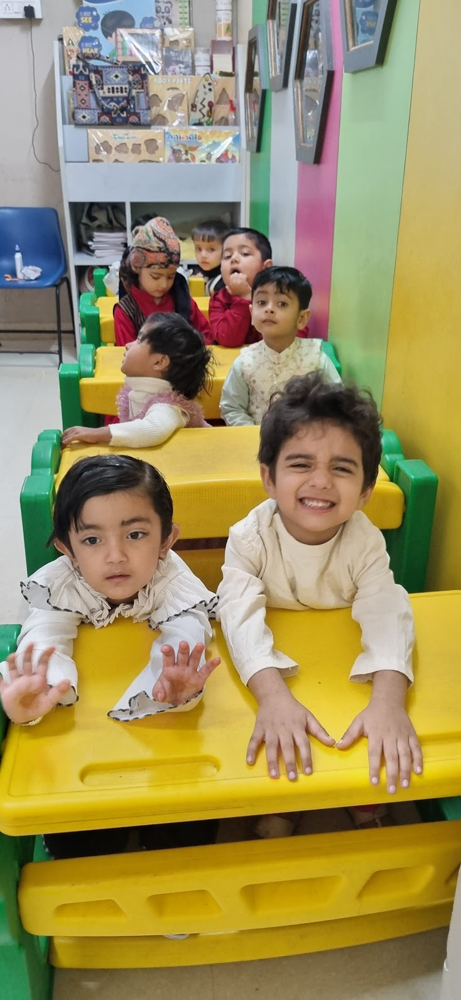

Kidsverse Nursery Programme
Curious learners begin to speak, share and explore.
Nursery builds language, listening, early concepts, social comfort and independence through stories, phonics readiness, numbers, art, music and guided play.

Nursery foundation
A joyful bridge from play to structured learning.
Nursery children are ready to observe, imitate, speak more and follow simple routines. At Kidsverse, we keep learning playful while gradually building attention, confidence, vocabulary, number awareness and classroom habits.
Learning areas
What children learn in Nursery.
Balanced exposure across language, numeracy, creativity, movement and values.
Language readiness
Picture reading, vocabulary, rhymes, listening and speaking confidence.
Pre-phonics
Sound awareness, letter exposure and playful recognition activities.
Early numeracy
Counting, sorting, matching, shapes, colors and size concepts.
Fine motor skills
Scribbling, tracing readiness, tearing, pasting, clay and hand control.
Creative expression
Music, movement, art, storytelling and pretend play.
Personal habits
Sharing, waiting, greeting, clean-up and independent routines.
A day at Kidsverse
Learning in short, happy bursts.
Nursery routines mix active play with focused mini-learning so children stay engaged.
Greeting, rhymes and mood setting.
Theme-based language or number play.
Hand control, creativity and exploration.
Listening, vocabulary and imagination.
Balance, movement and social interaction.
Confidence through sharing and praise.
By the end of Nursery
Your child becomes more expressive and independent.
Recognizes simple conceptsEnjoys rhymes and storiesBegins letter and sound awarenessCounts through playParticipates in group routinesShows better hand control


Parent questions
Common Nursery questions.
Is Nursery academic?
It is foundation-focused, not pressure-focused. Concepts are introduced through play and activity.
Will my child learn letters?
Children get early exposure to sounds, letters, vocabulary and picture reading.
How do you build confidence?
Through circle time, speaking turns, celebration activities and teacher encouragement.
Nursery admission enquiry
Meet our team and understand the right start for your child.
Share details and we will guide you on readiness, class fit and school visit timing.